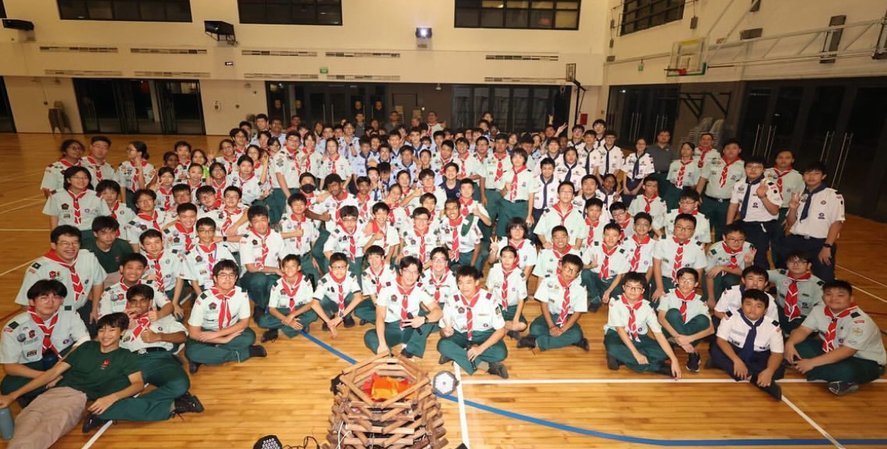

My scouting unit, the SST Fearless Falcons, received the Frank Cooper Sands Gold Award for both 2023 and 2024. As a senior in the unit, this achievement fills me with pride, knowing that many of the events I contributed to played a part in earning it.
As the saying goes: "Once a scout, always a scout." This has encouraged me to continue supporting my unit, even after stepping down from my CCA duties.
